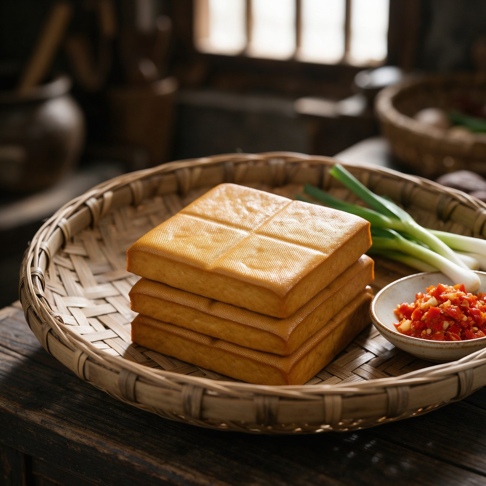

攸水贯境，梅城千年
攸县的攸，来自一条河。两千多年里，这条河养出一座县城、一片粮仓，也养出一群往外走的人。
湘东粮仓，衡之径庭
攸县隶属湖南省株洲市，位于罗霄山脉中段、武功山西端，因攸水贯境而得名，古称“梅城”，素有“衡之径庭、潭之门户”之称。
全县辖 13 个镇、4 个街道，县域面积 2648.7 平方公里。这里丘岗与河谷相间，耕地集中、灌溉便利，是湖南重要的商品粮产区，长期被称为“湘东粮仓”。
2025 年，攸县实现地区生产总值 517.4 亿元，同比增长 6.0%；户籍人口 77.62 万人，常住人口 60.57 万人。
数据来源：攸县人民政府门户网站公开信息（2025 年）

攸县有五样东西，是带着地名出省的
攸县米粉、攸县豆腐、攸县香干、攸县麻鸭、攸县茶油，均获国家地理标志认定。它们既是家乡的日常，也是在外攸县人最直接的乡愁。
攸县香干
以本地黄豆与山泉水制作，块型紧实、豆香厚，切片后久煮不散。是湘菜里最常见的一味家乡料。
攸县米粉
早上一碗粉，是攸县人共同的清晨。米粉爽滑耐煮，汤头讲究，出了县界便难复刻。
攸县豆腐
水质与工艺决定了它的细嫩与回甘，是家常菜里最见功力的一道。
攸县麻鸭
体型小巧、肉质紧实，适合血鸭、卤制与炖汤，是本地宴席的常客。
攸县茶油
丘陵山地适合油茶生长，压榨出的山茶油清亮耐储，是家乡灶台上的底色。

一湖、一洞、一寺，够走很多年
酒埠江旅游区把水库、溶洞与森林连成一片；宝宁寺的香火从唐代延续至今。周末回家，不必远行。
酒仙湖
酒埠江旅游区的核心水面，国家 4A 级旅游景区。湖区同时拥有国家地质公园、国家森林公园与国家水利风景区称号，适合环湖骑行与露营。
白龙洞
以地下河著称的溶洞，洞内钟乳发育完整。乘船入洞，水声与回声是这里最难忘的部分。
宝宁寺
始建于唐天宝年间，为佛教曹洞宗祖庭之一。寺院依山而建，古木与石刻保存较好。
阳升观
道教宫观，山林清幽，是当地人踏青与访古的去处。
桃源谷
峡谷与溪流相伴，夏季清凉，适合亲子短途。
仙人桥
天然石桥横跨溪谷，地质景观与传说同名，是酒埠江一带的标志性景点之一。
景区开放时间、门票与预约方式以攸县文旅部门及各景区公告为准。
这个县，一直有人往外走
攸县人外出谋生的历史很长：开出租车、开超市、进工厂、做生意。东莞是其中一处集中的落脚地。
“攸县的哥”
据公开报道，深圳出租车行业鼎盛时期，攸县籍司机占比一度接近九成；在全国各地开出租车的攸县人约十万人。一个县与一座城的出租车史，就这样绑在一起。
街角的攸县老板
据佛山市攸县商会 2022 年统计，佛山由攸县籍人士经营的超市超过 6000 家。小超市、便利店是很多攸县家庭的第一份生意。
把散点连成网络
2015 年，东莞市湖南攸县商会登记成立。散落在各镇街的企业，第一次有了共同的会址、共同的名字和共同的对外窗口。
上述行业数据来自媒体报道与异地商会公开统计，仅作背景参考，不作为招商或投资依据。
走得再远，也还认这条路。
商会每年组织回乡走访、公益捐赠与产业对接。想一起回去看看，或想把家乡的资源带出来，都可以先聊一聊。